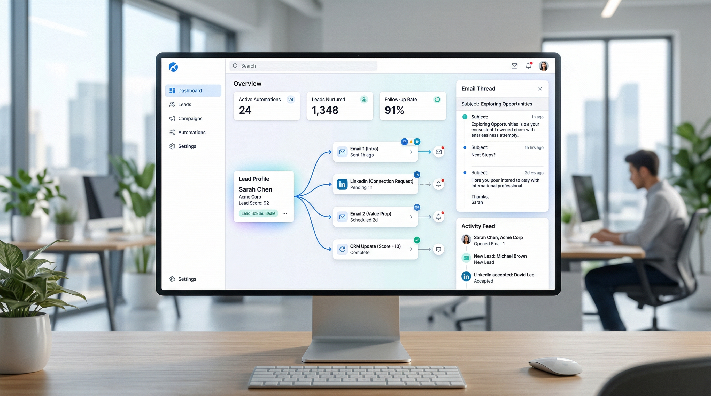

How to Automate B2B Lead Follow-Up with AI (and Never Lose a Deal Again)
Here's a stat that should keep every B2B founder up at night: 78% of deals go to the company that responds first. Yet the average B2B response time to a new lead is 42 hours. That's nearly two full business days — an eternity when your prospect is actively shopping.
If you're running a B2B service company with 5–50 employees, you already know this problem intimately. A lead fills out your contact form on Monday. You see the notification Tuesday afternoon between client calls. You draft a response Wednesday morning. By Thursday, they've signed with your competitor who replied in 12 minutes.
The fix isn't hiring more salespeople. It's automating your follow-up with AI — and doing it in a way that feels personal, not robotic.
Why Manual Follow-Up Is Killing Your Pipeline
Let's be honest about what "manual follow-up" actually looks like in a small B2B firm:
- Leads fall through cracks. You get busy with delivery. A hot prospect who emailed last week? Buried under 200 other emails.
- Inconsistent timing. Sometimes you follow up in an hour, sometimes in a week. There's no system — just whatever you remember.
- Generic templates. When you do follow up, it's the same copy-pasted message because you don't have time to personalize 30 emails a week.
- No multi-channel coverage. A prospect engages on LinkedIn, but your follow-up goes to email. They never see it.
- Zero tracking. Did they open your email? Click the link? Visit your pricing page? You have no idea.
The result: your pipeline leaks revenue at every stage. According to research by InsideSales.com, 50% of sales go to the vendor that responds first, and companies that follow up within 5 minutes are 9x more likely to convert than those that wait 30 minutes.
What AI-Powered Follow-Up Actually Looks Like
When we talk about AI follow-up automation, we're not talking about a drip sequence that blasts the same 5 emails to everyone. That's 2015 technology. Here's what modern AI follow-up looks like in practice:
1. Instant, Contextual First Response
A lead fills out your form at 11 PM on a Saturday. Within 2 minutes, they receive a personalized email that references their company, their industry, and the specific problem they mentioned. Not a generic "Thanks for reaching out!" — an actual response that demonstrates you understand their situation.
The AI agent pulls context from your CRM, the prospect's website, their LinkedIn profile, and the form submission itself. It crafts a response that sounds like you wrote it — because it was trained on your communication style.
2. Multi-Channel Follow-Up Sequences
Day 1: Personalized email response. Day 3: LinkedIn connection request with a relevant comment about their recent post. Day 5: Second email with a case study from their industry. Day 7: Brief check-in. Day 14: Value-add content that addresses their specific pain point.
Each touchpoint is adapted based on how the prospect has engaged so far. If they opened the first email but didn't reply, the second message takes a different angle. If they clicked a specific link, the follow-up dives deeper into that topic.
3. Intelligent Timing Optimization
AI doesn't just send follow-ups — it sends them at the right time. By analyzing open rates, click patterns, and engagement data across your entire prospect base, it learns when each prospect is most likely to engage. Some people check email at 7 AM. Others at 9 PM. The AI figures this out and adjusts.
4. Lead Scoring and Prioritization
Not all leads deserve the same follow-up intensity. An AI agent continuously scores prospects based on engagement signals: email opens, website visits, content downloads, social media interactions. High-intent leads get escalated to you for a personal call. Low-engagement leads get nurtured with automated content until they warm up — or get gracefully moved to a long-term drip.
The Numbers: What Automated Follow-Up Delivers
Companies that implement AI-powered follow-up automation typically see:
- 3–5x improvement in response time — from hours/days to minutes
- 40–60% increase in lead-to-meeting conversion — because no lead gets forgotten
- 2x more touchpoints per prospect — without increasing your team's workload
- 25–35% higher email open rates — thanks to personalization and timing optimization
- 15–20 hours saved per week — per salesperson, reclaimed from manual follow-up
For a B2B service company doing ₹2–10 Cr in annual revenue, that translates to 10–30 additional qualified meetings per month and a measurable increase in closed revenue within 90 days.
How to Set Up AI Follow-Up (Step by Step)
Step 1: Audit Your Current Follow-Up Process
Before automating anything, document what you're doing now. Track these numbers for one week:
- Average time from lead capture to first response
- Number of follow-ups per lead (before they convert or go cold)
- Channels used for follow-up (email only? phone? LinkedIn?)
- Conversion rate from lead to meeting
This gives you a baseline. Most B2B service firms discover their average first response time is 12–48 hours, they send 1–2 follow-ups total, and their lead-to-meeting conversion is under 10%.
Step 2: Define Your Follow-Up Sequences
Map out the ideal follow-up journey for each lead source. A website form submission gets a different sequence than a LinkedIn connection or a referral. Define:
- Number of touchpoints (we recommend 5–7 across 21 days)
- Channels for each touchpoint (email, LinkedIn, phone)
- Content type for each stage (introduction, case study, objection handling, last chance)
- Escalation triggers (what signals should alert you for a personal call?)
Step 3: Feed the AI Your Context
The difference between annoying automation and effective AI follow-up is context. Give your AI agent:
- Your past email conversations (for tone and style training)
- Client case studies and results
- Industry-specific talking points
- Common objections and your best responses
- Your calendar availability for meeting booking
Step 4: Set Guardrails
AI follow-up should be autonomous but not uncontrolled. Set clear rules:
- Maximum follow-ups per prospect (prevent spamming)
- Minimum interval between messages (no same-day double-sends)
- Business hours only for initial outreach
- Approval required for any message that mentions pricing or commitments
- Automatic pause when a prospect replies (hand off to human)
Step 5: Launch, Monitor, Optimize
Start with a small batch — 20–30 leads. Monitor open rates, reply rates, and meeting conversions for two weeks. Use the data to refine your sequences, adjust timing, and improve personalization. Then scale.
Common Mistakes to Avoid
Over-automation. If every message feels templated, prospects will tune out. The best AI follow-up mixes automated touches with genuine human moments. Let the AI handle the 80% and escalate the 20% that needs your personal touch.
Ignoring engagement signals. Sending the same sequence regardless of prospect behavior is lazy automation. If someone opened your email 4 times but didn't reply, that's a different signal than someone who never opened it. Your AI should adapt accordingly.
Too many channels too fast. Getting an email, LinkedIn message, and phone call from the same company in 24 hours feels aggressive. Space your multi-channel touches across days, not hours.
No human handoff. When a prospect replies with interest, a human should take over immediately. AI is for nurturing; closing is personal.
Why an AI CBO Agent Beats Point Solutions
You could cobble together Mailchimp for email, LinkedIn Sales Navigator for social, Calendly for booking, and HubSpot for CRM. That's 4 tools, 4 subscriptions, 4 learning curves, and zero coordination between them.
An AI Chief Business Officer (CBO) agent handles all of this in one system. It manages your email follow-ups, LinkedIn outreach, content creation, lead scoring, and CRM updates — autonomously, 24/7. One agent replaces a stack of tools and the person you'd need to hire to manage them.
For B2B service companies doing ₹2–10 Cr in revenue, this isn't a luxury — it's the difference between scaling with or without a full marketing team.
Getting Started
If you're losing deals because follow-up isn't happening fast enough (or at all), AI automation is the highest-ROI investment you can make right now. Start with a 7-day free trial — no credit card, no commitment. Let the AI agent handle your follow-up for a week and see the difference in your pipeline.
AgentGrow deploys an autonomous AI CBO agent for your business — handling content, social media, lead generation, email outreach, and follow-up automation. All running 24/7 so you can focus on delivery.